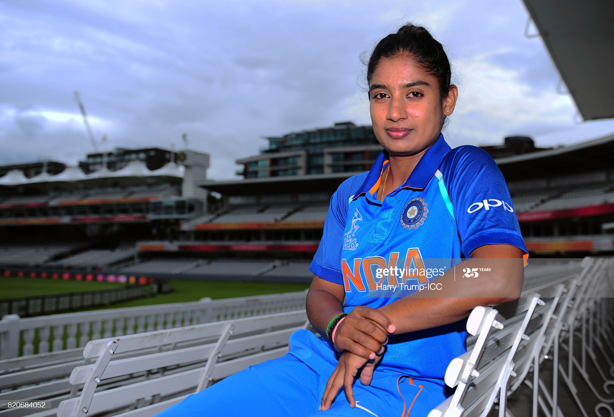

Mithali Dorai Raj

Wikipedia says:
Mithali Dorai Raj (born on 3 December 1982) is an Indian cricketer and the captain of the Indian women's national cricket team. A right-handed opening batter, she is often regarded as the greatest batswoman of all time.
She is the highest run-scorer in women's international cricket and the only female cricketer to surpass the 6,000 run mark in Women's One Day International matches. She is the first player to score seven consecutive 50s in ODIs.Raj also holds the record for most half-centuries in WODIs.In June 2018 during the 2018 Women's Twenty20 Asia Cup, she became the first player from India (either male or female) to score 2000 runs in T20Is, and also became the first woman cricketer to reach 2002 WT20I runs.
In 2005, she became the captain of the side. Raj is the only player (female) to have captained India in more than one ICC ODI World Cup final, doing so twice in 2005 and 2017. On 1 February 2019, during India's series against New Zealand Women, Raj became the first woman to play in 200 ODI matches.In September 2019, she announced her retirement from T20Is to focus on ODI cricket.